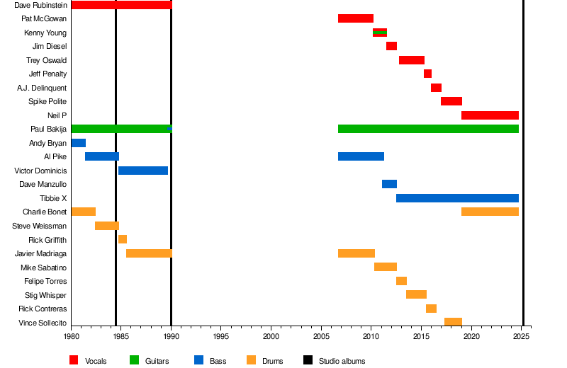
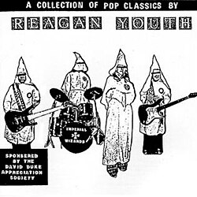

David Rubinstein és Paul Bakija a Russell Sage Junior Középiskolában találkoztak, és együtt jártak a Forest Hills Középsikolába, ugyanabba a középiskolába, ahova a Ramones mind a négy tagja is járt. Röviddel az 1980. augusztus 22-i első koncertjük előtt Reagan Youthra változtatta a nevükert Pus-ról, Andy Bryan basszusgitárossal és Charlie Bonet dobossal. A Reagan Youth gyorsan kapott egy követőséget, és hamarosan Manhattan punk klubjaiban játszott. Bakija fizikatanára az FHHS-nél részt vett egy Queens-i alagsori próbán. Késöbb részt vett egy koncerten a CBGB-nél; ahol egyszer leborotválták a fejét; időnként kapcsolatba került a zenekarral, és időnként a városba vontatta Paul erősítőit és felszerelését Queensből a Dodge Dartjában. Miután a zenekar 1981-ben felvett egy négy dalos demót, Bryant Al Pike váltotta fel. Bonet nem sokkal később távozott.
Miután megszerezték a diplomájukat. Az első lemezük, a hétdalos, ifjúsági himnuszok az Új Rend számára, elkezdtek országosan turnézni, és rendszeresek voltak a vasárnap délutáni hardcore matiné műsorokon a CBGB-ben. 1984-ben, egy jelentős amerikai turné előtt Pike és Weissman elhagyta a csoportot, Pike pedig rövid időre csatlakozott a Glenn Danzig Samhain csoportjához. Helyükre Victor Dominicis és Rick Griffith került. Griffith-et 1985-ben Javier Madriaga váltotta fel.
A nyolcvanas évek végére a kiterjedt turné megviselte a csoportot. A sok koncert és a hardcore punk zenekar viszonylag nagy albumeladásai ellenére folyamatosan megtörve és szegényen találták magukat. Miután Ronald Reagan 1989-ben elhagyta hivatalát, a zenekar szétvált. Annak ellenére, hogy úgy döntöttek, hogy feloszlanak, a csoport felkeltette a New Red Archives punk kiadó figyelmét, akivel két albumos szerződést írtak alá. A New Red Archives először újra kiadta az Ifjúsági Himnuszokat az Új Világrend számára, három további kimenetellel, mint az 1. kötet LP. 1990-ben Bakija (gitáron és basszusgitáron is játszott), Madriaga és Rubinstein felvett egy utolsó albumot, a Volume 2-t.

Miután felbomlottak, a tagok mind fojtatták a zenélést, mind külön helyeken, viszont 1990-re Rubinstein heroin használó és alkalmanként díler lett, barátnőjével együtt. Nemsokkal késöb egyik ügyfelével Bresciani a barátnője eltűnt, majd néhány napal késöbb az ügyfél teherautójában megtalálták Bresciani holt testét.
Zeneileg a zenekar szilárdan gyökerezett a korai hardcore/punk crossover hagyományban, de karrierjük előrehaladtával mélyebbre került a punk rock kortársaik által fel nem ismert vizekbe. Míg 1983-as debütálásuk egy kiváló munka, amely összhangban van a hardcore punk konvenciókkal, 1990-es folytatásuk sűrű gitármunkát tartalmaz, tele szólókkal és overdubokkal, változatos tempókkal és számos hangkísérlettel, ami összehasonlítja a Black Sabbath-ot és az 1970-es évek album-orientált rockját.
Ezen a linken található a Reagan Youth Spotify oldala
It's a Beautiful Day:
A dal egy maróan gúnyos, fekete humorral teli politikai és társadalomkritikai szatíra, amely a tipikus amerikai kispolgári közöny és az elvakult nacionalizmus veszélyeire mutat rá.Itt található a spotify linkje.
Jesus Was a Communist:
A dal alapvető célja, hogy szembesítse a magukat mélyen vallásosnak, kereszténynek valló, de közben a vadkapitalizmust, a fegyverkezést és a gazdagok kiváltságait támogató konzervatív politikai közeget a bibliai Jézus tényleges tanításaival.Itt található a spotify linkje.
(You're A) Go Nowhere:
A dalszöveg a modern társadalom monotonitását egy gyári futószalaghoz hasonlítja, amely gondolkodás nélkül sodorja magával az embereket.Itt található a spotify linkje.
Anytown:
Ez a szám a tipikus, idillinek beállított amerikai kisvárosi mintacsalád képét szedi ízekre. A dal szövege szándékosan úgy épül fel, mintha egy klasszikus amerikai kisiskolás olvasókönyvből lépett volna elő. Olyan tipikus karakterek és nevek jelennek meg benne, mint Sally, Dick, Mark és a klisés kutyanév, Spot. A refrénszerűen ismételgetett „Run, spot, run” mondat közvetlen utalás ezekre a naiv, idealizált tankönyvekre.Itt található a spotify linkje.
New Aryans:
A dal a zenekar nevében rejlő alapvető iróniára épít: a Reagan-korszak konzervatív, nacionalista politikáját és az ekkoriban felerősödő szélsőjobboldali, fehér felsőbbrendűséget hirdető csoportokat állítja párhuzamba a náci Németországgal.Itt található a spotify linkje.
Get the Ruler Out:
A hardcore punk és skinhead szubkultúrán belül rendkívül gyakoriak voltak a fizikai erőszakra épülő, macsó területi és hatalmi harcok. A zenekar ebben a dalban a humor és a gúny fegyverét használja, hogy nevetségessé tegye ezeket a figurákat.Itt található a spotify linkje.
No Class:
A dal egy maróan cinikus és dühös hardcore punk szám. A dal kettős jelentéssel bír: egyszerre támadja a társadalmi osztályok létezését és az elitista, lekezelő emberi magatartást.Itt található a spotify linkje.
Mindegyik szám egy albumból van, itt látható az albumborító:
